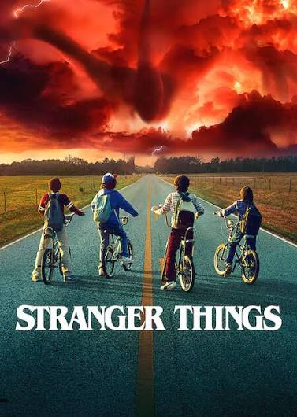

Stranger Things

Situada nos anos 1980, Stranger Things se passa na cidade rural fictícia de Hawkins, Indiana. Como fachada, o laboratório da região realizava experimentos científicos para o Departamento de Energia Americano, quando na realidade, os pesquisadores ali investiram em experimentos com o paranormal e o sobrenatural, incluindo o uso de cobaias humanas.
Não intencionalmente, eles criaram um portal para uma dimensão alternativa conhecida como Mundo Invertido, o que iria impactar a vida dos residentes da pequena cidade. Em 1983, quando Will Byers (Noah Schnapp), um menino de 12 anos, desaparece misteriosamente, o xerife Jim Hopper (David Harbour) inicia uma operação para encontrá-lo. Enquanto isso, Mike (Finn Wolfhard), Dustin (Gaten Matarazzo) e Lucas (Caleb McLaughlin), melhores amigos de Will, decidem procurá-lo por conta própria. Mas as investigações acabam levando o grupo em direção aos experimentos secretos do governo e a Eleven (Millie Bobby Brown), uma peculiar menina perdida na floresta. Assim como as crianças, a mãe Joyce Byers (Winona Ryder) está determinada e fará o impossível para rever o filho.
Informações principais
- Gênero: Ficção científica, terror e drama
- Ano de lançamento: 2016
- Temporadas: 5
- Episódios: 42
- Criadores:Matt Duffer e Ross Duffer
Curiosidades
- O roteiro inicial criado pelos Irmãos Duffer chamava-se Montauk e se passava em Long Island, com uma vibe inspirada no filme Tubarão.
- Antes de ser aceita pela Netflix, a série foi rejeitada entre 15 e 20 vezes por executivos que achavam que a história deveria ser infantil ou focada apenas no xerife Hopper.
- Para a construção de cenários grandiosos (como na 5ª temporada), a produção utilizou mais de 15 toneladas de isopor de alta resistência próprio para escultura — material que foi totalmente reciclado depois.